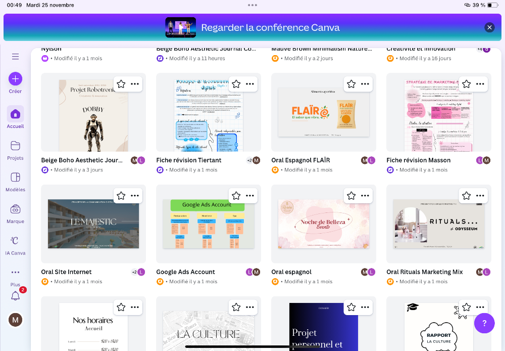
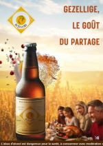
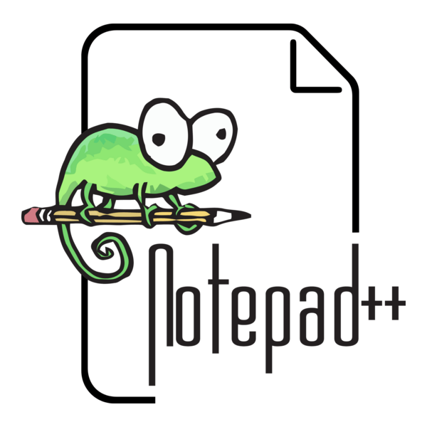

Compétences
Moi
J'ai 19ans et je suis en deuxième année d'étude. Depuis toujours, je suis passionnée par la mode, le luxe et tout ce qui touche à l'esthétique . Je me dirige donc vers le marketing digital et la communication, des domaines qui peuvent me permettre de travailler au sein de ma passion tout en aimant ce que je fais. En ce moment, je suis à la recherche d'un stage avec l'idée qu'il puisse déboucher sur une alternance. Je souhaite gagner en exp"riences et apprendre un maximum.
Dans ma manière de travailler, je suis quelqu'un de sérieuse et impliquée, attentive, organisée et autonome. J'ai envie d'évoluer dans un environnement stimulant, qui me permettra de partager mes idées et d'apprendre chaque jours.
Mes compétences aquises
Durant mes deux années de But j'ai aquis plusieurs compétences, telles que canva , excel , gimp , des projets web ainsi que des SAE et un stage
Grâce aux cours et SAE, j'ai appris à utiliser canva afin de créer des supports variés comme des affiches, des présentations, des plaquettes commerciale, ainsi que des visuels pour les réseaux soiaux. C'est un vrai outil de création que je maitrise beaucoup mieux maintenant.
J'ai aussi beaucoup progresser sur Excel. On l'utilise dans plusieurs projets, notamment pour la SAE eaux vives. Cela m'a permis de mieux analyser des données, faire des tableaux ou créer des graphiques. Aujourd'hui, Excel m'aide à faire des calculs rapidement, analyser ddes r"sultats et représenter des données grâce à des données et des graphiques.
J'ai pu apprendre à utiliser GIMP , un logiciel de création visuelle et de retouche. Au début, ce n'était pas simple mais les différents cours m'ont permis de mieux comprendre le logiciel. J'ai appris à retoucher des images, détourner des éléments et jouuer avec des calques et effets.
 Les SAE m'ont vraiment permis de progresser car ce sont des projets concrets qui nous obligent à appliquer ce qu'on voit en cours. Grâce à ces travaux, j'ai appris à travailler en groupe et organiser un projet du début à la fin. De plus, j'ai pu gérer mon temps, utiliser des outils différents comme ceux évoqués précedemment et présenter mes idées à l'oral.
 Notepad m'a permis de comprendre des bases de la stucturation d'un texte et du codage. Cela m'a aussi aidée à comprendre comment fonctionnent certains fichiers, apprendre à modifier ou créer des petits éléments de code, être plus à l'aise avec les outils informatiques. Il m'a donné dess bases qui pourront toujours me servir dans le marketing digital ou la création de contenu.